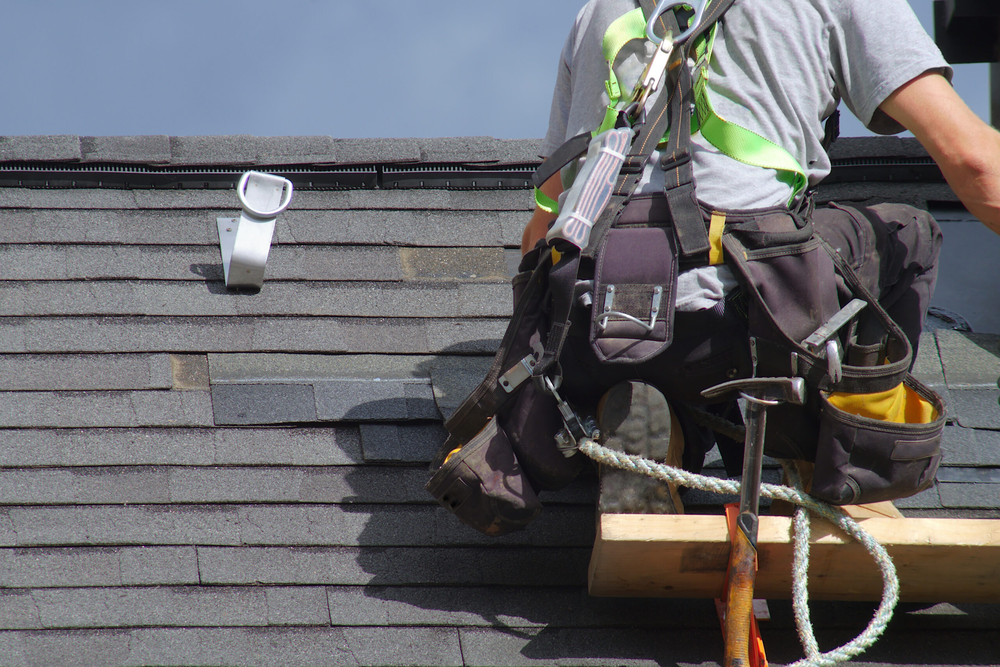

How to Protect Your Roof During Storm Season
Your roof is your home’s first line of defense against storms, and keeping it in top shape is critical to avoiding costly damage. With storm season upon us, here are some practical tips to protect your roof and keep your home safe.
- Inspect Your Roof Regularly Before storm season hits, inspect your roof for loose shingles, cracks, or other signs of wear. Addressing these issues early can prevent them from worsening during severe weather.
- Clear Gutters and Downspouts Clogged gutters can cause water to back up onto your roof, leading to leaks and water damage. Ensure your gutters and downspouts are clear and functioning properly.
- Trim Overhanging Branches Branches near your roof can break during a storm, causing significant damage. Keep trees well-trimmed to reduce the risk.
- Reinforce Your Roof If your area is prone to strong winds, consider reinforcing your roof with additional fasteners or wind-resistant materials. A professional inspection can help identify areas for improvement.
- Know Who to Call Even with the best preparation, storm damage can still happen. Having a trusted restoration company like S.W.A.T. Restoration on speed dial ensures quick and efficient repairs.
A well-maintained roof is your best defense against storm damage. By taking these proactive steps, you can protect your home and avoid unnecessary stress. If you need assistance with storm damage repairs or a roof inspection, S.W.A.T. Restoration is here to help.